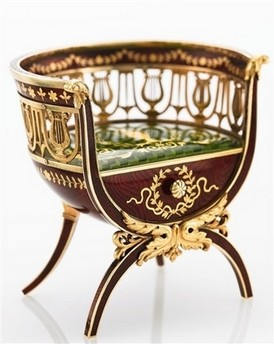
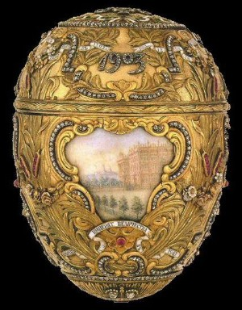

Miniature Fabergé Chair, sold by Sotheby’s
Last night in a fit of sleeplessness, I came across this chair, which was just sold under auction at Sotheby’s. It’s just a smidge over 2″ tall. It was created by Fabergé sometime between 1899 and 1903. I think it’s just stunning. I don’t know if it’s 2.8 million dollars worth of stunning (that’s what it sold for), but I do find myself utterly enchanted by it. I’ve always been on the wee side myself, which I think makes me a bit drawn to all things undersized.
It’s the work of Fabergé workmaster Michael Perchin, and is based on furniture designed in 1839 by Leo von Klenze for Tsar Nicholas I for the new Hermitage in St. Petersburg. It’s crafted out of gold and enamel, with the surfaces ground to resemble the grain in mahogany. The front is a removable drawer. Miniature furniture by Fabergé is very rare; other similar pieces, including a miniature table and desk, are in the collection of Queen Elisabeth II.
It got me started looking through the famous eggs that Fabergé made for Russia’s royal Romanov family from 1885, right up until everything went kerplooie for them in 1917. I thought that I’d looked through the Fabergé eggs before, but it turns out I hadn’t — I recognized a few of them, but I definitely hadn’t seen all of them, and didn’t know exactly how intricate some of them were. I always thought of them as little boxes, but I had no idea the wide variety and creativity in their construction. For instance, I wasn’t aware that some of them had clockworks, and even automotons — chirping, wing-flapping birds!

Peter the Great Fabergé egg
The history of the eggs is very interesting, particularly seeing them in the context of what was happening in the Romanov family through the years, how World War I impacted everything, and of course the whole Rasputin brouhaha. After the Bolsheviks took over, the eggs sort of scattered to the four winds, and some of them are still missing, or have parts missing. The ultimate Easter egg hunt, I suppose.
The eggs are the very definition of ornate, and at first glance are just too much. However, these haven’t been executed by clumsy hands — no Bedazzler atrocities here — every detail is so finely crafted, so mind-bogglingly precise, it’s hard not to get sucked in. Find some pictures that let you really zoom in on the detail — it’s breathtaking. No really — I found myself holding my breath even just looking at them on a computer screen, I’d probably seize right up if I ever got to see one in person. I can’t think of anything else that I’ve ever seen that has so much care and fine detail in such a compact space, just for art’s sake. Nobody is making things like this anymore, and that’s a shame.
The Fabergé eggs have been documented pretty well on the Mieks site, including lots of great up-close photographs from different angles, and even some video (the video of the Clover-leaf egg in particular makes a big difference — photos can’t capture how delicate and translucent the egg is).